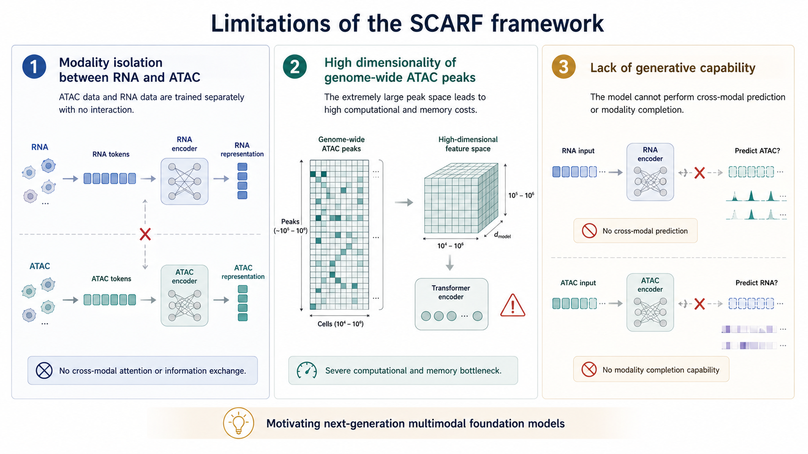

问题分析

SCARF 的问题
模态不可见 · 计算瓶颈 · 缺乏生成能力
虽然SCARF取得了一定成果，但也暴露出一些问题。首先是模态间不可见的问题，ATAC数据和RNA数据是分开训练的，没有充分利用模态间的互补信息。其次是计算瓶颈，全基因组ATAC峰矩阵的维度过高，达到约五十万维，给计算带来了很大压力。第三是缺乏生成能力，无法进行跨模态预测与补全。这些问题促使我们思考如何构建一个更完善的单细胞多组学基础模型。